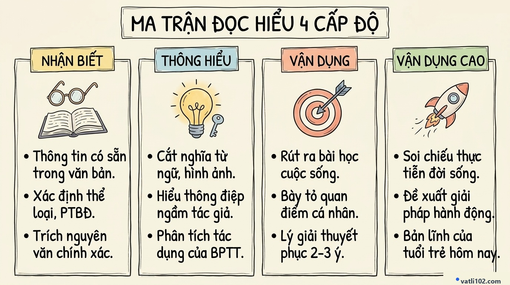

Bộ Đề Luyện Đọc Hiểu Văn Xuôi Ngoài SGK Chuẩn Công Văn 3175 & Đáp Án Chi Tiết
Theo định hướng của Công văn 3175/BGDĐT-GDTrH, các đề kiểm tra và đề thi Tốt nghiệp THPT môn Ngữ văn bắt buộc phải sử dụng ngữ liệu mới hoàn toàn ngoài sách giáo khoa. Mục tiêu của sự thay đổi này là đánh giá đúng năng lực đọc hiểu và tư duy phản biện thực chất của học sinh, chấm dứt tình trạng học vẹt và sao chép văn mẫu.
Trong đề thi Tốt nghiệp THPT, phần Đọc hiểu chiếm 4.0 điểm với ngữ liệu thường là văn bản nghị luận xã hội hoặc văn bản báo chí đương đại. Để làm tốt phần này, các em cần nắm vững ma trận 4 cấp độ nhận thức và kỹ thuật trả lời đúng trọng tâm được hướng dẫn dưới đây.
1. Ma trận 4 cấp độ tư duy theo Công văn 3175
Bộ câu hỏi Đọc hiểu được xây dựng dựa trên 4 bậc thang nhận thức rõ ràng:
- Cấp độ 1: Nhận biết (0.75 – 1.0 điểm): Nhận diện phương thức biểu đạt, phong cách ngôn ngữ, hoặc tìm kiếm thông tin có sẵn trực tiếp trên bề mặt văn bản.
- Cấp độ 2: Thông hiểu (1.0 – 1.25 điểm): Giải thích ý nghĩa của một câu nói, phân tích lý do tác giả đưa ra quan điểm, hoặc làm rõ hiệu quả của các biện pháp nghệ thuật.
- Cấp độ 3: Vận dụng (1.0 điểm): Bày tỏ quan điểm đồng tình hoặc không đồng tình với tác giả và đưa ra lý lẽ giải thích hợp lý.
- Cấp độ 4: Vận dụng cao (0.75 – 1.0 điểm): Đề xuất giải pháp thực tế, rút ra bài học cho bản thân và thế hệ trẻ trong bối cảnh cuộc sống hôm nay.
2. Sơ đồ Sketchnote: Ma trận Đọc hiểu 4 cấp độ

3. Chiến thuật làm bài theo từng cấp độ
CẤP ĐỘ 1 — NHẬN BIẾT (Lấy trọn điểm tuyệt đối)
Dạng câu hỏi thường gặp: "Theo tác giả, những yếu tố nào...", "Xác định phương thức biểu đạt chính...".
CẤP ĐỘ 2 — THÔNG HIỂU (Tránh trả lời thiếu ý)
Dạng câu hỏi thường gặp: "Anh/chị hiểu như thế nào về câu nói...", "Vì sao tác giả lại cho rằng...".
• Vế 1 (Nghĩa bề mặt): Cắt nghĩa từ ngữ then chốt trong câu nói.
• Vế 2 (Nghĩa sâu xa): Khái quát bài học, thông điệp mà tác giả muốn gửi gắm đằng sau câu nói đó.
CẤP ĐỘ 3 & 4 — VẬN DỤNG VÀ VẬN DỤNG CAO (Phân hóa điểm 9 – 10)
Dạng câu hỏi thường gặp: "Anh/chị có đồng tình với ý kiến... không? Vì sao?", "Hãy nêu 2 việc làm thiết thực của bản thân để...".
- Bước 1: Trả lời rõ ràng, dứt khoát: "Tôi đồng tình / đồng tình một phần với ý kiến của tác giả."
- Bước 2: Nêu từ 2 đến 3 lý do giải thích bằng các từ nối mạch lạc: Thứ nhất là..., Thứ hai là..., Mặt khác...
- Bước 3: Đưa ra giải pháp hành động cụ thể, khả thi và phù hợp với lứa tuổi học sinh.
4. Đề luyện thi thực tế & Đáp án chuẩn 4.0 điểm
- Câu 1 (Nhận biết - 0.75đ): Theo tác giả, những yếu tố tạo nên giá trị khác biệt của con người gồm: cảm xúc, lòng thấu cảm và trách nhiệm đạo đức.
- Câu 2 (Thông hiểu - 1.0đ): Hiểu về nhận định của tác giả:
• Nhận định cảnh báo nguy cơ con người đánh mất bản sắc và sự chủ động khi quá lệ thuộc vào các tiện ích công nghệ.
• Khi lười tư duy và vô cảm trước cuộc sống, con người sẽ tự biến mình thành những công cụ vô hồn, đánh mất đi năng lực sáng tạo và tình yêu thương. - Câu 3 (Vận dụng - 1.0đ): Bày tỏ quan điểm:
• Em hoàn toàn đồng tình với ý kiến của tác giả.
• Lý giải: Vì công nghệ chỉ là công cụ hỗ trợ cho đời sống; chính cảm xúc, lòng nhân ái và sự đồng cảm giữa người với người mới là nền tảng cốt lõi xây dựng một xã hội hạnh phúc. - Câu 4 (Vận dụng cao - 1.25đ): Đề xuất hành động cho bản thân:
1. Chủ động học tập để sử dụng công nghệ một cách thông minh phục vụ học tập, không lạm dụng để thay thế tư duy cá nhân.
2. Thường xuyên quan tâm, chia sẻ và tham gia các hoạt động cộng đồng thực tế để nuôi dưỡng lòng thấu cảm và tình yêu thương.